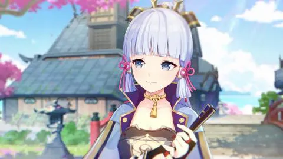

Minhas principais comps com meus perosnagens T5
Meus principais personagens e qual tipo de arma
<
Personagens
Personagem | Arma |
Ayaka |
Espada |
Xiao |
Lança |
Zhongli |
Lança |
Ganyu |
Arco |
Eula |
Espadão |
Shogun Raiden |
Lança |
Yae Miko |
Catalizador |
Hu Tao |
Lança |
Diluc |
Espadão |
Qiqi |
Espada |
Keqing |
Espada |
Shenhe |
lança |
Mona |
Catalizador |
Itto |
Espadão |
Melhores personagens
- Shogun
- Ayaka
- Xiao
- Ganyu
- Zhongli
- Diluc
- Yae Miko
- Eula
- Hu Tao
- Shenhe
- Itto
- Qiqi
- Mona
- Keqing
Kamisato Ayaka

Kamisato Ayaka do elemento
cryo
e é um personagem de espada que tem alto dano baseado no cryo, seus ataques depende de sua taxa critica e dano critico.
seus talentos principais são:
- Ataque normal: Naname
- Arte kamisato: Hyouka
- Arte kamisato: soumetsu
E suas principais armas podem ser:
- Cortadora de neblina reforjada
- Cortadora de jade primordial
- Espada do penhasco obscuro
- A flauta
- Lamina amenoma kageuta
ela tem a game play bem simples, quando usado o botão de correr, ela transfotma o ataque fisico dela em ataque
cryo
fazendo dela um personagem 100% gelo, assim podendo ser usado em comps de congelamento com muita facilidade ou em comps de pyro para dar mais dano
Cryo
+
Hydro
=congelamento